Общие сведения о переходах
Windows Presentation Foundation (WPF) поддерживает навигацию в стиле браузера, которую можно использовать в приложениях двух типов: автономных приложениях и XAML-приложениях браузера (XBAP). Чтобы упаковать содержимое для навигации WPF предоставляет класс Page. Можно переходить от одной Page к другой декларативно, с помощью Hyperlink, или программно, с помощью NavigationService. WPF использует журнал, чтобы запоминать страницы, на которые был осуществлен переход и позволяет возвращаться к ним.
Page, Hyperlink, NavigationService и журнал образуют основу для поддержки навигации, предлагаемой WPF. В этом обзоре подробно рассматриваются эти возможности, а также расширенная поддержка переходов, включающая переход к свободным XAML файлам, HTML и произвольным объектам.
Note
В этом разделе термин «браузер» относится только к браузерам, в которых можно разместить WPF-приложения, т.е. Internet Explorer и Firefox.
Переходы в приложениях WPF
В этом разделе содержится обзор основных возможностей перехода в WPF. Эти возможности доступны для автономных приложений и XBAP, но в этом разделе они представлены в контексте XBAP.
Note
В этом разделе не обсуждаются построение и развертывание XBAP. Дополнительные сведения о XBAP см. в разделе Обзор приложений браузера XAML WPF.
В этом разделе объясняются и демонстрируются следующие аспекты переходов.
Реализация страницы
В WPF вы можете перейти к нескольким типам содержимого, включая объекты .NET Framework, пользовательские объекты, значения перечисления, пользовательские элементы управления, XAML файлы и HTML файлы. Тем не менее наиболее распространенным и удобным способом упаковки содержимого является Page. Кроме того, Page реализует особые возможности перехода в целях улучшения внешнего вида приложений и упрощения их разработки.
С помощью Page можно декларативно реализовать доступную для перехода страницу XAML содержимого с помощью разметки, как показано ниже.
<Page xmlns="http://schemas.microsoft.com/winfx/2006/xaml/presentation" />
Объект Page, реализованный в XAML, имеет корневой элемент разметки Page и требует объявление XML-пространства имен WPF. Элемент Page содержит содержимое, к которому необходимо осуществить переход. Для добавления содержимого задается свойство Page.Content, как показано в следующем примере разметки.
<Page xmlns="http://schemas.microsoft.com/winfx/2006/xaml/presentation">
<Page.Content>
<!-- Page Content -->
Hello, Page!
</Page.Content>
</Page>
Page.Content может содержать только один дочерний элемент; в предыдущем примере, содержимым является отдельная строка «Hello, Page!». На практике обычно как дочерний элемент для создания и хранения содержимого используется элемент управления макетом (см. в разделе макет).
Дочерний элемент Page считаются содержимым класса Page и, следовательно, не нужно использовать явное присвоение Page.Content. Следующая разметка является декларативным эквивалентом предыдущего примера.
<Page xmlns="http://schemas.microsoft.com/winfx/2006/xaml/presentation">
<!-- Page Content -->
Hello, Page!
</Page>
В этом случае Page.Content автоматически задается дочерним элементом Page. Дополнительные сведения см. в разделе Модель содержимого WPF.
Определение Page только в разметке полезно для отображения содержимого. Тем не менее Page также может отображать элементы управления, позволяющие пользователям взаимодействовать со страницей, и он может отвечать на действия пользователя, выполняя обработку событий и вызывая логику приложения. Интерактивная Page реализуется с помощью комбинации разметки и кода программной части, как показано в следующем примере.
<Page
xmlns="http://schemas.microsoft.com/winfx/2006/xaml/presentation"
xmlns:x="http://schemas.microsoft.com/winfx/2006/xaml"
x:Class="SDKSample.HomePage">
Hello, from the XBAP HomePage!
</Page>
using System.Windows.Controls;
namespace SDKSample
{
public partial class HomePage : Page
{
public HomePage()
{
InitializeComponent();
}
}
}
Чтобы разрешить совместную работу файла разметки и файла кода программной части, требуется следующая конфигурация.
В разметке
Pageэлемент должен включать атрибутx:Class. При построении приложения существованиеx:Classв разметке указывает Microsoft Build Engine (MSBuild) создатьpartialкласс, производный от Page и имеющий имя, заданное параметром атрибутаx:Class. Это требует добавления в XML объявления пространства имен для схемы XAML (xmlns:x="http://schemas.microsoft.com/winfx/2006/xaml"). Созданныйpartialкласс реализуетInitializeComponent, который вызывается для регистрации событий и задания свойств, реализованных в разметке.В коде программной части должен быть
partialкласс с тем же именем, который был задан параметром атрибутаx:Classв разметке и он должен быть производным от Page. Это позволяет связать файл кода сpartialклассом, созданным для файла разметки при построении приложения (см. в разделе построение приложения WPF).В коде программной части класс Page должен реализовывать конструктор, который вызывает
InitializeComponent. МетодInitializeComponentреализуется вpartialклассе, созданном на основе реазметки, для регистрации событий и задания свойств, которые определены в разметке.
Note
При добавлении нового Page в проект, использующий Microsoft Visual Studio, Page реализуется с помощью разметки и кода программной части и включает необходимую конфигурацию для создания связи между файлами разметки и кода, как было описано здесь.
Имея созданную Page, можно осуществить переход к ней. Чтобы указать первую Page, к которой приложение переходит, необходимо настроить начальную Page.
Настройка начальной страницы
XBAP требуется определенная инфраструктура для размещения в обозревателе. В WPF класс Application является частью определения приложения, которое устанавливает необходимую инфраструктуру приложения (см. в разделе Общие сведения об управлении приложением).
Определение приложения обычно реализуется с помощью разметки и кода программной части, с файлом разметки, настроенным как элемент ApplicationDefinition MSBuild. Ниже приведен определение приложения для XBAP.
<Application
xmlns="http://schemas.microsoft.com/winfx/2006/xaml/presentation"
xmlns:x="http://schemas.microsoft.com/winfx/2006/xaml"
x:Class="SDKSample.App" />
using System.Windows;
namespace SDKSample
{
public partial class App : Application { }
}
Можно использовать определение приложения XBAP, чтобы указать начальную Page, которая автоматически открывается при запуске приложения. Это можно сделать, присвоив свойству StartupUri URI нужной Page.
Note
В большинстве случаев Page компилируется и развертывается вместе с приложением. В этих случаях URI, идентифицирующий Page — это pack URI, который соответствует схеме pack. Pack URI рассматриваются далее в разделе URI типа Pack в WPF. Для перехода к содержимому можно также использовать схему HTTP, которая рассматривается далее.
Можно задать StartupUri декларативно в разметке, как показано в следующем примере.
<Application
xmlns="http://schemas.microsoft.com/winfx/2006/xaml/presentation"
xmlns:x="http://schemas.microsoft.com/winfx/2006/xaml"
x:Class="SDKSample.App"
StartupUri="PageWithHyperlink.xaml" />
В этом примере StartupUri присваивается относительный pack URI файла HomePage.xaml. При запуске XBAP будет автоматически осуществлен переход к HomePage.xaml. Это показано на следующем рисунке, показывающем XBAP, запущенное с веб-сервера.

Note
Дополнительные сведения о разработке и развертывании XBAP, см. в разделах Обзор приложений браузера XAML WPF и развертывание приложений WPF.
Настройка заголовка, ширины и высоты основного окна
Одно дело, вы могли заметить в предыдущем примере — что заголовком как браузера, так и панели вкладок является URI для XBAP. Заголовок не только длинный, но также не является ни привлекательным, ни информативным. По этой причине Page предлагает способ для изменения заголовка, задав WindowTitle свойство. Кроме того, можно настроить ширину и высоту окна браузера, задав WindowWidth и WindowHeight, соответственно.
WindowTitle, WindowWidth, и WindowHeight можно задать декларативно в разметке, как показано в следующем примере.
<Page
xmlns="http://schemas.microsoft.com/winfx/2006/xaml/presentation"
xmlns:x="http://schemas.microsoft.com/winfx/2006/xaml"
x:Class="SDKSample.HomePage"
WindowTitle="Page Title"
WindowWidth="500"
WindowHeight="200">
Hello, from the XBAP HomePage!
</Page>
Результат показан на примере ниже.
Переход по гиперссылке
Типичный XBAP состоит из нескольких страниц. Самый простой способ перехода от одной страницы к другой — для использования Hyperlink. Можно декларативно добавить Hyperlink для Page с помощью Hyperlink элемент, который показан в следующем примере разметки.
<Page
xmlns="http://schemas.microsoft.com/winfx/2006/xaml/presentation"
WindowTitle="Page With Hyperlink"
WindowWidth="250"
WindowHeight="250">
<Hyperlink NavigateUri="UriOfPageToNavigateTo.xaml">
Navigate to Another Page
</Hyperlink>
</Page>
Объект Hyperlink элемент требует следующего:
Пакет URI из Page для перехода, определяемом параметрами
NavigateUriатрибута.Содержимого, что пользователь может щелкнуть для инициации перехода, например текст и изображения (для содержимого,
Hyperlinkэлемент может содержать, см. в разделе Hyperlink).
На следующем рисунке показан XBAP с Page с Hyperlink.
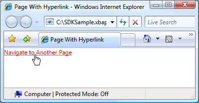
Как и следовало ожидать, щелкнув Hyperlink вызывает XBAP для перехода к Page , определяемому NavigateUri атрибута. Кроме того XBAP добавляет запись для предыдущего Page в список последних страниц в Internet Explorer. Это показано на следующем рисунке.
Помимо поддержки перехода от одного Page в другую, Hyperlink также поддерживает переход к фрагменту.
Переход к фрагменту
Переход к фрагменту — это переход к фрагменту содержимого в любом текущего Page или другой Page. В WPF, фрагмент содержимого представляет собой данные, содержащиеся в именованном элементе. Именованный элемент — элемент, имеющий его Name набором атрибутов. В следующей разметке показан именованный TextBlock элемент, содержащий фрагмент содержимого.
<Page
xmlns="http://schemas.microsoft.com/winfx/2006/xaml/presentation"
WindowTitle="Page With Fragments" >
<!-- Content Fragment called "Fragment1" -->
<TextBlock Name="Fragment1">
Ea vel dignissim te aliquam facilisis ...
</TextBlock>
</Page>
Для Hyperlink для перехода к фрагменту содержимого NavigateUri атрибут должен содержать следующее:
URI Из Page с для перехода к фрагменту содержимого.
Символ "#".
Имя элемента на Page , включающего фрагмент содержимого.
Фрагмент URI имеет следующий формат.
URI_страницы # имя_элемента.
Ниже приведен пример Hyperlink , настроенной на переход к фрагменту содержимого.
<Page
xmlns="http://schemas.microsoft.com/winfx/2006/xaml/presentation"
WindowTitle="Page That Navigates To Fragment" >
<Hyperlink NavigateUri="PageWithFragments.xaml#Fragment1">
Navigate To pack Fragment
</Hyperlink>
</Page>
Note
В этом разделе описывается реализация переходов фрагмента по умолчанию в WPF. WPF Кроме того, позволяет реализовать собственную схему переходов фрагмента, которая отчасти требует обработки NavigationService.FragmentNavigation событий.
Important
Вы можете перейти к фрагментам на свободных XAML страниц (только для разметки XAML файлы с Page как корневой элемент) только в том случае, если страницы можно просмотреть с помощью HTTP.
Тем не менее свободный XAML страницу можно перейти к своим собственным фрагментам.
Служба переходов
Хотя Hyperlink позволяет пользователю инициировать переход к конкретному Page, работа по поиску и загрузке страницы выполняется с NavigationService класса. По сути NavigationService предоставляет возможность обработки запроса перехода со стороны клиентского кода, такие как Hyperlink. Кроме того NavigationService реализует поддержку более высокого уровня для отслеживания и влияние на запроса перехода.
Когда Hyperlink нажатии WPF вызовы NavigationService.Navigate для обнаружения и загрузки Page в указанный пакет URI. Скачанный Page преобразуется в дерево объектов, корневой объект которого является экземпляром Скачанный Page. Ссылка на корневой Page объект хранится в NavigationService.Content свойство. Пакет URI для содержимого, к которому был осуществлен переход, сохраняется в NavigationService.Source свойство, хотя NavigationService.CurrentSource сохраняет пакет URI для последней страницы, к которому был осуществлен переход.
Note
Существует возможность WPF приложению требуется более одного активного NavigationService. Дополнительные сведения см. в разделе узлы переходов далее в этом разделе.
Программный переход с помощью службы переходов
Не нужно знать о NavigationService Если переход реализован декларативно в разметке с помощью Hyperlink, так как Hyperlink использует NavigationService от вашего имени. Это означает, что пока прямой или непрямой родитель объекта Hyperlink является узлом перехода (см. в разделе узлы переходов), Hyperlink будут иметь возможность находить и использовать службу переходов этого узла для обработки запрос навигации.
Тем не менее, существуют ситуации, когда необходимо использовать NavigationService напрямую, включая следующие:
Если вам нужно создать экземпляр Page с помощью конструктора не по умолчанию.
Если вам нужно задать свойства Page перед переходом к нему.
Когда Page что необходимо осуществлять переходы можно определить только во время выполнения.
В этих случаях необходимо написать код для программной инициации перехода посредством вызова Navigate метод NavigationService объекта. Для этого требуется получить ссылку на NavigationService.
Получение ссылки на службу переходов
По причинам, охваченных узлы переходов разделе WPF приложение может иметь более одного NavigationService. Это означает, что в коде необходимо предусмотреть способ поиска NavigationService, который обычно является NavigationService , приводящую к текущему Page. Можно получить ссылку на NavigationService путем вызова staticNavigationService.GetNavigationService метод. Чтобы получить NavigationService , переход к конкретному Page, передать ссылку на Page в качестве аргумента GetNavigationService метод. Следующий код показывает способ получения NavigationService для текущего Page.
using System.Windows.Navigation;
// Get a reference to the NavigationService that navigated to this Page
NavigationService ns = NavigationService.GetNavigationService(this);
Как быстро найти NavigationService для Page, Page реализует NavigationService свойство. Эти действия показаны в следующем примере.
using System.Windows.Navigation;
// Get a reference to the NavigationService that navigated to this Page
NavigationService ns = this.NavigationService;
Note
Объект Page может получить только ссылку на его NavigationService при Page вызывает Loaded событий.
Программный переход к объекту страницы
В следующем примере показано, как использовать NavigationService осуществить программный переход к Page. Программный переход является обязательным, поскольку Page то есть, куда выполняется переход могут быть созданы только с помощью конструктора, единый, не по умолчанию. Page С нестандартным конструктором показан в следующей разметке и коде.
<Page
x:Class="SDKSample.PageWithNonDefaultConstructor"
xmlns="http://schemas.microsoft.com/winfx/2006/xaml/presentation"
xmlns:x="http://schemas.microsoft.com/winfx/2006/xaml"
Title="PageWithNonDefaultConstructor">
<!-- Content goes here -->
</Page>
using System.Windows.Controls;
namespace SDKSample
{
public partial class PageWithNonDefaultConstructor : Page
{
public PageWithNonDefaultConstructor(string message)
{
InitializeComponent();
this.Content = message;
}
}
}
Page , Осуществляющий переход к Page с нестандартным конструктором показан в следующей разметке и коде.
<Page
xmlns="http://schemas.microsoft.com/winfx/2006/xaml/presentation"
xmlns:x="http://schemas.microsoft.com/winfx/2006/xaml"
x:Class="SDKSample.NSNavigationPage">
<Hyperlink Click="hyperlink_Click">
Navigate to Page with Non-Default Constructor
</Hyperlink>
</Page>
using System.Windows;
using System.Windows.Controls;
using System.Windows.Navigation;
namespace SDKSample
{
public partial class NSNavigationPage : Page
{
public NSNavigationPage()
{
InitializeComponent();
}
void hyperlink_Click(object sender, RoutedEventArgs e)
{
// Instantiate the page to navigate to
PageWithNonDefaultConstructor page = new PageWithNonDefaultConstructor("Hello!");
// Navigate to the page, using the NavigationService
this.NavigationService.Navigate(page);
}
}
}
При Hyperlink об этом Page является щелчке, запускается переход путем создания экземпляра Page перейдите к с помощью конструктора не по умолчанию и вызвав NavigationService.Navigate метод. Navigate принимает ссылку на объект, NavigationService производится переход, типа pack URI.
Программный переход с URI типа pack
Если вам необходимо создать в пакете URI программным образом (если только определения пакета URI во время выполнения, например), можно использовать NavigationService.Navigate метод. Эти действия показаны в следующем примере.
<Page
xmlns="http://schemas.microsoft.com/winfx/2006/xaml/presentation"
xmlns:x="http://schemas.microsoft.com/winfx/2006/xaml"
x:Class="SDKSample.NSUriNavigationPage">
<Hyperlink Click="hyperlink_Click">Navigate to Page by Pack URI</Hyperlink>
</Page>
using System;
using System.Windows;
using System.Windows.Controls;
using System.Windows.Navigation;
namespace SDKSample
{
public partial class NSUriNavigationPage : Page
{
public NSUriNavigationPage()
{
InitializeComponent();
}
void hyperlink_Click(object sender, RoutedEventArgs e)
{
// Create a pack URI
Uri uri = new Uri("AnotherPage.xaml", UriKind.Relative);
// Get the navigation service that was used to
// navigate to this page, and navigate to
// AnotherPage.xaml
this.NavigationService.Navigate(uri);
}
}
}
Обновление текущей страницы
Объект Page не загружается, если он имеет тот же пакет URI пакета URI , хранящееся в NavigationService.Source свойство. Чтобы принудительно WPF попытку загрузить текущую страницу, можно последовательно вызвать методы NavigationService.Refresh метод, как показано в следующем примере.
<Page
xmlns="http://schemas.microsoft.com/winfx/2006/xaml/presentation"
xmlns:x="http://schemas.microsoft.com/winfx/2006/xaml"
x:Class="SDKSample.NSRefreshNavigationPage">
<Hyperlink Click="hyperlink_Click">Refresh this page</Hyperlink>
</Page>
using System.Windows;
using System.Windows.Controls;
using System.Windows.Navigation;
namespace SDKSample
{
public partial class NSRefreshNavigationPage : Page
{
void hyperlink_Click(object sender, RoutedEventArgs e)
{
// Force WPF to download this page again
this.NavigationService.Refresh();
}
}
}
Время существования перехода
Как вы уже видели, существует множество способов инициации перехода. Когда переход инициирован и навигации во время выполнения, можно отслеживать и повлиять на него с помощью следующих событий, которые реализуются NavigationService:
Navigating. Появляется, когда запрошен новый переход. Можно использовать для отмены перехода.
NavigationProgress. Происходит периодически во время загрузки, тем самым предоставляя информацию о ходе процесса навигации.
Navigated. Появляется, когда страница найдена и загружена.
NavigationStopped. Происходит, когда переход остановлен (путем вызова StopLoading), или при запросе нового перехода во время выполнения текущего перехода.
NavigationFailed. Появляется при возникновении ошибки во время перехода к запрошенному содержимому.
LoadCompleted. Появляется, когда содержимое, к которому был осуществлен переход, загружено и проанализировано и начинается его отрисовка.
FragmentNavigation. Появляется в начале перехода к фрагменту содержимого, который происходит:
немедленно, если нужный фрагмент находится в текущем содержимом;
после загрузки исходного содержимого, если нужный фрагмент находится в другом содержимом.
События перехода вызываются в порядке, который показан на следующем рисунке.
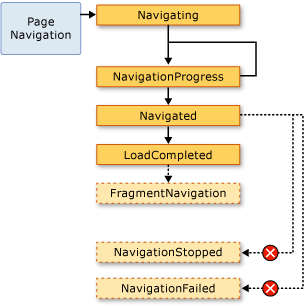
В общем случае Page не связан с этими событиями. Более вероятно, что приложение связано с ними, и по этой причине эти события также вызываются с помощью Application класса:
Каждый раз NavigationService возникает событие Application класс вызывает соответствующее событие. Frame и NavigationWindow обеспечивают те же события, для обнаружения переходов в соответствующих областях.
В некоторых случаях Page могут заинтересовать эти события. Например Page может обрабатывать NavigationService.Navigating событие, чтобы определить необходимость отмены перехода. Эти действия показаны в следующем примере.
<Page
xmlns="http://schemas.microsoft.com/winfx/2006/xaml/presentation"
xmlns:x="http://schemas.microsoft.com/winfx/2006/xaml"
x:Class="SDKSample.CancelNavigationPage">
<Button Click="button_Click">Navigate to Another Page</Button>
</Page>
using System;
using System.Windows;
using System.Windows.Controls;
using System.Windows.Navigation;
namespace SDKSample
{
public partial class CancelNavigationPage : Page
{
public CancelNavigationPage()
{
InitializeComponent();
// Can only access the NavigationService when the page has been loaded
this.Loaded += new RoutedEventHandler(CancelNavigationPage_Loaded);
this.Unloaded += new RoutedEventHandler(CancelNavigationPage_Unloaded);
}
void button_Click(object sender, RoutedEventArgs e)
{
// Force WPF to download this page again
this.NavigationService.Navigate(new Uri("AnotherPage.xaml", UriKind.Relative));
}
void CancelNavigationPage_Loaded(object sender, RoutedEventArgs e)
{
this.NavigationService.Navigating += new NavigatingCancelEventHandler(NavigationService_Navigating);
}
void CancelNavigationPage_Unloaded(object sender, RoutedEventArgs e)
{
this.NavigationService.Navigating -= new NavigatingCancelEventHandler(NavigationService_Navigating);
}
void NavigationService_Navigating(object sender, NavigatingCancelEventArgs e)
{
// Does the user really want to navigate to another page?
MessageBoxResult result;
result = MessageBox.Show("Do you want to leave this page?", "Navigation Request", MessageBoxButton.YesNo);
// If the user doesn't want to navigate away, cancel the navigation
if (result == MessageBoxResult.No) e.Cancel = true;
}
}
}
Если регистрируется обработчик с событием перехода из Page, как предыдущий пример, необходимо также отменить регистрацию обработчика событий. Если этого не сделать, могут возникнуть побочные эффекты, как WPF запоминает переходы Page с помощью журнала.
Запоминание перехода в журнале
WPF использует два стека для запоминания страниц, на которые был осуществлен переход: стек переходов назад и вперед. При переходе из текущего Page в новый Page или вперед к существующему Page, текущий Page добавляется стек переходов назад. При переходе из текущего Page вернитесь к предыдущему Page, текущий Page добавляется вперед. Стек "Назад", стек "Вперед" и функциональные возможности для управления ими в совокупности называются журналом. Каждый элемент в стеке переходов назад и вперед — это экземпляр JournalEntry класса и называется записи журнала.
Перемещение по журналу в браузере Internet Explorer
По существу, журнала работает так же, как обратно и вперед кнопки в Internet Explorer сделать. Это показано на следующем рисунке.
Для XBAP , размещаемых в Internet Explorer, WPF осуществляет интеграцию журнала в области навигации UI из Internet Explorer. Это позволяет пользователям перемещаться по страницам в XBAP с помощью обратно, вперед, и последние страницы кнопки в Internet Explorer. Журнал не интегрирован в Microsoft Internet Explorer 6 таким же образом, что и для Internet Explorer 7 или Internet Explorer 8. Вместо этого WPF отображает навигации замените UI.
Important
В Internet Explorer, при переходе со страницы и обратно XBAP, в журнале сохраняются только записи журнала для страниц, которые не поддерживались в активном состоянии. Обсуждение поддержки страниц в активном состоянии, см. в разделе время существования страницы и журнал далее в этом разделе.
По умолчанию текст для каждого Page , отображаемый в последние страницы список Internet Explorer — URI для Page. В большинстве случаев это не особенно важно для пользователя. К счастью можно изменить текст, используя следующие параметры.
Вложенный
JournalEntry.Nameзначение атрибута.Page.TitleЗначение атрибута.Page.WindowTitleЗначение атрибута и URI для текущего Page.Интерфейс URI для текущего объекта Page. (Значение по умолчанию)
Порядок, в котором перечислены параметры, совпадает с порядком приоритета для поиска текста. Например если JournalEntry.Name не установлен, другие значения игнорируются.
В следующем примере используется Page.Title атрибут, чтобы изменить текст, отображаемый в записи журнала.
<Page
xmlns="http://schemas.microsoft.com/winfx/2006/xaml/presentation"
xmlns:x="http://schemas.microsoft.com/winfx/2006/xaml"
x:Class="SDKSample.PageWithTitle"
Title="This is the title of the journal entry for this page.">
</Page>
using System.Windows.Controls;
namespace SDKSample
{
public partial class PageWithTitle : Page
{
}
}
Перемещение по журналу с помощью WPF
Несмотря на то, что пользователь может перемещаться по журналу с помощью обратно, вперед, и последние страницы в Internet Explorer, можно также перейти по журналу с помощью обоих декларативные и программные механизмы, предоставляемые WPF. Одна из причин для этого — предоставление пользовательских переходов Пользовательские интерфейсы на страницах.
Можно декларативно добавить поддержку журнального перехода с помощью команд перехода, предоставляемых NavigationCommands. Следующий пример демонстрирует, как использовать BrowseBack команды перехода.
<Page
xmlns="http://schemas.microsoft.com/winfx/2006/xaml/presentation"
xmlns:x="http://schemas.microsoft.com/winfx/2006/xaml"
x:Class="SDKSample.NavigationCommandsPage">
<Hyperlink Command="NavigationCommands.BrowseBack">Back</Hyperlink>
<Hyperlink Command="NavigationCommands.BrowseForward">Forward</Hyperlink>
</Page>
Можно программно перемещаться по журналу с помощью одного из следующих членов NavigationService класса:
Журнал можно также управлять программным образом, как описано в сохранение состояния содержимого с помощью журнала переходов далее в этом разделе.
Время существования страницы и журнал
Рассмотрите возможность XBAP с несколькими страницами, которые содержат форматированное содержимое, включая графики, анимации и мультимедиа. Объем памяти для подобных страниц может быть довольно большим, особенно если используются видеоматериалы и звуковые файлы. Учитывая, что в журнале «запоминаются», которые были посещенные страницы XBAP может быстро расходовать значительный объем памяти.
По этой причине, по умолчанию журнала выполняется для хранения Page метаданные в каждой записи журнала, а не ссылку на Page объекта. При переходе к записи журнала его Page метаданные используются для создания нового экземпляра указанного Page. Как следствие каждый Page , к которому осуществляется переход имеет время существования, который показан на следующем рисунке.
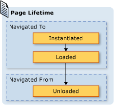
Хотя при использовании поведения журнала по умолчанию можно сэкономить потребление памяти, производительность отрисовки каждой страницы может уменьшиться; повторное создание экземпляров Page может быть много времени, особенно в том случае, если он имеет много содержимого. Если необходимо сохранить Page экземпляра в журнале, можно рисовать на два способа это сделать. Во-первых, можно осуществить программный переход к Page путем вызова метода NavigationService.Navigate метод.
Во-вторых, можно указать, что WPF сохранял экземпляр Page в журнале, задав KeepAlive свойства true (по умолчанию используется false). Как показано в следующем примере, можно задать KeepAlive декларативно в разметке.
<Page
xmlns="http://schemas.microsoft.com/winfx/2006/xaml/presentation"
xmlns:x="http://schemas.microsoft.com/winfx/2006/xaml"
x:Class="SDKSample.KeepAlivePage"
KeepAlive="True">
An instance of this page is stored in the journal.
</Page>
Время существования Page это поддерживается в активном состоянии, немного отличается от другой — нет. В первый раз Page , остается активным осуществляется переход, так же, как создается экземпляр Page , не сохраняется. Тем не менее так как экземпляр Page сохраняется в журнале, он никогда не инициализируется повторно для до тех пор, пока он остается в журнале. Следовательно Если Page имеет логику инициализации, который должен вызываться каждый раз Page к которому осуществляется переход, следует переместить ее из конструктора в обработчик для Loaded событий. Как показано на следующем рисунке, Loaded и Unloaded события по-прежнему вызываются каждый раз Page осуществляется переход и обратно, соответственно.
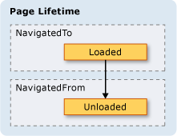
Когда Page — не поддерживается в активном состоянии, можно выполнять одно из следующих:
Сохранять ссылку или любую его часть.
Регистрировать обработчики событий с событиями, которые не реализованы в объекте.
Выполнения любой из этих действий будут созданы ссылки, которые вынудят Page должно храниться в памяти, даже в том случае, если он был удален из журнала.
В общем случае следует отдавать предпочтение по умолчанию Page поведение не Page проверки активности. Однако при этом существуют реализации состояния, которые описаны в следующем разделе.
Сохранение состояния содержимого с помощью журнала переходов
Если Page не поддерживаться в рабочем состоянии, но имеет элементы управления, которые собирают данные от пользователя, что происходит с данными, если пользователь переходит с и обратно Page? С точки зрения пользователя следует ожидать появления ранее введенных данных. К сожалению так как новый экземпляр класса Page создается при каждом переходе, элементы управления, что собранные данные, инициализируются заново и данные будут потеряны.
К счастью, журнал обеспечивает запоминание данных через Page при переходах, включая данные элементов управления. В частности, записи журнала для каждого Page действует как временный контейнер для связанного Page состояния. Ниже показано, как используется эта поддержка при Page перехода из:
Запись для текущего Page добавляется в журнал.
Состояние Page хранится в записи журнала для этой страницы, которая добавляется в стек переходов назад.
Новый Page , к которому осуществляется переход.
Если страницы Page будет осуществлен переход обратно, с помощью журнала, выполняются следующие действия:
Page Создается (самая верхняя запись журнала в стеке переходов назад).
Page Обновляется с состоянием, которое было сохранено в записи журнала для Page.
Page Выполняется переход к.
WPF автоматически использует эту поддержку, при использовании следующих элементов управления на Page:
Если Page использует эти элементы управления, содержащиеся в них данные запоминаются при Page при переходах, как показано любимого цвета ListBox на следующем рисунке.
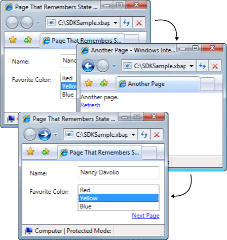
Когда Page имеет элементы управления, не упомянутые в предыдущем списке, или когда состояние сохраняется в пользовательских объектах, необходимо написать код для сохранения в журнале состояния Page переходов.
Если необходимо запомнить небольшие части состояния Page при переходах, можно использовать свойства зависимостей (см. в разделе DependencyProperty), настроенные с помощью FrameworkPropertyMetadata.Journal флаг метаданных.
Если состояние, ваш Page необходимо запомнить при переходах состоит из нескольких фрагментов данных, может оказаться меньше кода с большим объемом инкапсуляцию состояния в одном классе и реализовать IProvideCustomContentState интерфейс.
Если вам необходимо перейти по различным состояниям одного Page, не переходя с Page , можно использовать IProvideCustomContentState и NavigationService.AddBackEntry.
Файлы cookie
Другим образом, как WPF приложения могут хранить данные с помощью файлов cookie, которые создаются, обновляются и удалить с помощью SetCookie и GetCookie методы. Файлы cookie, можно создать в WPF будут использовать другие виды веб-приложений это те же cookie; файлы cookie представляют собой произвольные фрагменты данных, которые хранятся в приложении на клиентском компьютере во время или между сеансами приложения. Данные файлов cookie обычно представлены в форме пары "имя — значение" в следующем формате.
имя = значение
При передаче данных SetCookie, вместе с Uri расположения, для которого задается файл cookie, файл cookie создается в памяти, и он доступен только в течение текущего сеанса приложения. Этот тип файла cookie называется файл cookie сеанса.
Чтобы сохранить файл cookie на протяжении нескольких сеансов приложения, необходимо добавить в файл cookie дату окончания срока действия, используя следующий формат.
ИМЯ = ЗНАЧЕНИЕ ; expires=DAY, DD-MMM-YYYY HH:MM:SS GMT
Файл cookie с датой окончания срока действия хранится в текущем Windows папке временных файлов Интернета для установки до истечения срока действия файла cookie. Такой файл cookie называется постоянный файл cookie так, как он сохраняется между сеансами приложения.
Получить сеанс и постоянные файлы cookie, вызвав GetCookie , передавая Uri расположения, где был задан файл cookie с SetCookie метод.
Ниже приведены некоторые способы поддержки файлов cookie в WPF:
WPF Автономные приложения и XBAP можно создать и управлении файлами cookie.
Файлы cookie, создаваемых с XBAP можно получить из браузера.
XBAP на том же домене можно создавать и совместно использовать файлы cookie.
XBAP и HTML страниц из одного домена можно создавать и совместно использовать файлы cookie.
Файлы cookie отправляются при XBAP и свободные XAML страниц создания веб-запросов.
Оба верхнего уровня XBAP и XBAP размещенные в IFRAMES доступны файлы cookie.
Поддержка файлов cookie в WPF одинаков для всех поддерживаемых браузерах.
В Internet Explorer, политика P3P, которая относится к файлам cookie, соблюдается системой WPF, особенно в отношении Майкрософт и сторонних XBAP.
Структурная навигация
Если вам нужно передать данные из одного Page в другую, можно передать данные как аргументы конструктора не по умолчанию Page. Обратите внимание, что если вы используете этот способ, то необходимо поддерживать Page активном состоянии; Если нет, в следующий раз, перейдите к Page, WPF заново создается Page с помощью конструктора по умолчанию.
Кроме того ваши Page можно реализовать свойства, заданные с данными, которые необходимо передать. Все усложняется тем не менее, если Page требуется для передачи данных обратно в Page , приводящую к нему. Проблема в том, что изначально переходы не поддерживают механизмы, гарантирующие, что Page возвращается после перехода из него. По существу переходы не поддерживают семантику вызова/возврата. Чтобы решить эту проблему, WPF предоставляет PageFunction<T> класс, который можно использовать, чтобы убедиться, что Page возвращается в прогнозируемом и структурированном виде. Дополнительные сведения см. в разделе Общие сведения о структурной навигации.
Класс NavigationWindow
К этому моменту мы рассмотрели целый ряд служб переходов, которые с наибольшей вероятностью будут использоваться для построения приложений с содержимым, допускающим переходы. Эти службы обсуждались в контексте XBAP, несмотря на то, что они не ограничиваются XBAP. Воспользуйтесь преимуществами опыт работы современных пользователей для включения навигации в стиле браузера в автономные приложения, современные операционные системы и приложений Windows. Вот наиболее распространенные примеры.
Word тезауруса: Переход по вариантам слов.
Обозреватель файлов: Просмотр файлов и папок.
Мастеры: Разбиение сложной задачи на несколько страниц, которые можно перемещаться. Например, мастер компонентов Windows, который обрабатывает добавление и удаление компонентов Windows.
Включение навигации в стиле браузера в автономных приложениях, можно использовать NavigationWindow класса. NavigationWindow является производным от Window и расширяет его такой же поддержкой навигации, XBAP предоставить. Можно использовать NavigationWindow как главное окно автономного приложения или как дополнительное окно, например диалоговое окно.
Для реализации NavigationWindow, как и в случае с классами самого верхнего уровня в WPF (Window, Page, и так далее), используйте комбинацию разметки и кода. Эти действия показаны в следующем примере.
<NavigationWindow
xmlns="http://schemas.microsoft.com/winfx/2006/xaml/presentation"
xmlns:x="http://schemas.microsoft.com/winfx/2006/xaml"
x:Class="SDKSample.MainWindow"
Source="HomePage.xaml"/>
using System.Windows.Navigation;
namespace SDKSample
{
public partial class MainWindow : NavigationWindow
{
public MainWindow()
{
InitializeComponent();
}
}
}
Этот код создает NavigationWindow , автоматически переходит к Page (HomePage.xaml) при NavigationWindow открыт. Если NavigationWindow является главное окно приложения, можно использовать StartupUri атрибут, чтобы запустить его. Это показано в следующем примере разметки.
<Application
xmlns="http://schemas.microsoft.com/winfx/2006/xaml/presentation"
StartupUri="MainWindow.xaml" />
На следующем рисунке показан NavigationWindow как главное окно автономного приложения.
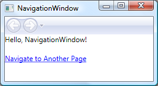
Из рисунка, можно увидеть, что NavigationWindow имеет заголовок, несмотря на то, что он не задан NavigationWindow реализации кода из предыдущего примера. Вместо этого заголовок задается с помощью WindowTitle свойство, которое показано в следующем коде.
<Page
xmlns="http://schemas.microsoft.com/winfx/2006/xaml/presentation"
Title="Home Page"
WindowTitle="NavigationWindow">
</Page>
Установка WindowWidth и WindowHeight свойства также влияет на NavigationWindow.
Обычно вы реализуете собственный NavigationWindow при необходимости настроить его поведение или внешний вид. Если вы этого не сделали, можно использовать команду быстрого вызова. Если указать пакет URI из Page как StartupUri в автономном приложении, Application автоматически создает NavigationWindow узел Page. В следующем примере разметки показано, как это сделать.
<Application
xmlns="http://schemas.microsoft.com/winfx/2006/xaml/presentation"
StartupUri="HomePage.xaml" />
Если необходимо, чтобы дополнительное окно приложения например диалоговое окно, чтобы быть NavigationWindow, чтобы открыть его, можно использовать код в следующем примере.
// Open a navigation window as a dialog box
NavigationWindowDialogBox dlg = new NavigationWindowDialogBox();
dlg.Source = new Uri("HomePage.xaml", UriKind.Relative);
dlg.Owner = this;
dlg.ShowDialog();
На рисунке ниже показан результат.
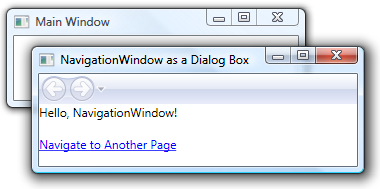
Как вы видите, NavigationWindow отображает Internet Explorer-стиль обратно и вперед кнопки, которые позволяют пользователям перемещаться по журналу. Эти кнопки предоставляют пользователям те же возможности, что показаны на следующем рисунке.
Если страницы предоставляют свои собственные поддержку перемещения по журналу и пользовательский Интерфейс, можно скрыть обратно и вперед кнопок, отображаемых по NavigationWindow , задав значение ShowsNavigationUI свойства false.
Кроме того, можно использовать поддержку настройки в WPF для замены UI из NavigationWindow сам.
Класс Frame
Как обозреватель так и NavigationWindow представляют собой окна, предоставляющие содержимое. В некоторых случаях приложения имеют содержимое, которое не обязательно должно размещаться в целом окне. Такое содержимое помещается внутрь другого содержимого. Можно вставить содержимое с возможностью переходов в другое содержимое с помощью Frame класса. Frame предоставляет такую же поддержку как NavigationWindow и XBAP.
В следующем примере показано, как добавить Frame для Page декларативно с помощью Frame элемент.
<Page
xmlns="http://schemas.microsoft.com/winfx/2006/xaml/presentation"
WindowTitle="Page that Hosts a Frame"
WindowWidth="250"
WindowHeight="250">
<Frame Source="FramePage1.xaml" />
</Page>
Эта разметка задает Source атрибут Frame элемент в пакет URI для Page , Frame должен перейти сначала. На следующем рисунке показан XBAP с Page с Frame , осуществляющий переходы между несколькими страницами.
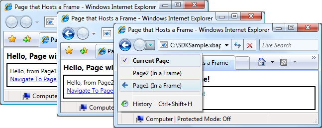
Вы не обязательно использовать только Frame внутри содержимого Page. Обычно для размещения Frame внутри содержимого Window.
По умолчанию Frame использует собственный журнал только при отсутствии другого журнала. Если Frame является частью содержимого, которое размещено внутри NavigationWindow или XBAP, Frame использует журнал, который принадлежит NavigationWindow или XBAP. Иногда Однако Frame может потребоваться отвечать за собственный журнал. Одна из причин для этого является необходимость разрешения переходов в журнале в этих страницах, расположенных на серверах Frame. Это показано на следующем рисунке.
В этом случае можно настроить Frame с помощью параметра собственный журнал JournalOwnership свойство Frame для OwnsJournal. Это показано в следующем примере разметки.
<Page
xmlns="http://schemas.microsoft.com/winfx/2006/xaml/presentation"
WindowTitle="Page that Hosts a Frame"
WindowWidth="250"
WindowHeight="250">
<Frame Source="FramePage1.xaml" JournalOwnership="OwnsJournal" />
</Page>
На следующем рисунке показано влияние перехода Frame , использует собственный журнал.
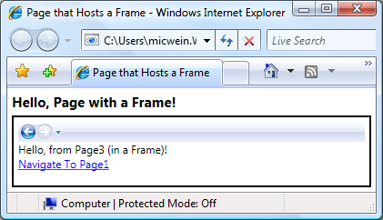
Обратите внимание, что записи журнала отображаются в области навигации UI в Frame, а не с помощью Internet Explorer.
Note
Если Frame является частью содержимого, размещенного в Window, Frame использует собственный журнал и, следовательно, отображает собственный навигации UI.
Если вам требуется Frame для предоставления собственный журнал без отображения панели навигации UI, можно скрыть навигации UI , задав NavigationUIVisibility для Hidden. Это показано в следующем примере разметки.
<Page
xmlns="http://schemas.microsoft.com/winfx/2006/xaml/presentation"
WindowTitle="Page that Hosts a Frame"
WindowWidth="250"
WindowHeight="250">
<Frame
Source="FramePage1.xaml"
JournalOwnership="OwnsJournal"
NavigationUIVisibility="Hidden" />
</Page>
Узлы переходов
Frame и NavigationWindow являются классами, которые известны как узлы переходов. Объект узла навигации является классом, который может перейти к содержимому и отобразить. В этой ситуации каждом узле переходов используются собственная NavigationService и журнала. На следующем рисунке показана основная структура узла переходов.
По сути, это позволяет NavigationWindow и Frame обеспечить такую же поддержку переходов, XBAP предоставляет при размещении в браузере.
Помимо использования NavigationService и журнала, узлы переходов реализуют те же члены, NavigationService реализует. Это показано на следующем рисунке.
Это позволяет программировать поддержку переходов непосредственно с ними. Это можно использовать, если необходимо предоставить навигации UI для Frame , размещенного в Window. Кроме того, оба типа реализуют дополнительные, связанных с навигацией члены, включая BackStack (NavigationWindow.BackStack, Frame.BackStack) и ForwardStack (NavigationWindow.ForwardStack, Frame.ForwardStack), которые позволяют перебирать записи журнала в серверной части стек и переслать стека, соответственно.
Как упоминалось ранее, в приложении может существовать несколько журналов. На следующем рисунке показано пример, когда это возможно.
Переход к содержимому, отличному от страниц XAML
В этом разделе Page и пакет XBAP использовался для демонстрируют различные возможности переходов WPF. Тем не менее Page то есть скомпилированный в приложение не является единственным типом содержимого, к которому можно осуществить переход и пакет XBAP — не единственный способ определения содержимого.
Как показано в этом разделе, можно также осуществлять переходы к свободным XAML файлы, HTML файлы и объекты.
Переход к свободным файлам XAML
Свободный XAML файл является файлом со следующими характеристиками:
Содержит только XAML (то есть без кода).
имеет объявление соответствующего пространства имен;
имя файла имеет расширение XAML.
Например, рассмотрим следующее содержимое, сохраненное как свободный XAML файле Person.xaml.
<!-- Person.xaml -->
<TextBlock xmlns="http://schemas.microsoft.com/winfx/2006/xaml/presentation">
<TextBlock FontWeight="Bold">Name:</TextBlock>
<TextBlock>Nancy Davolio</TextBlock>
<LineBreak />
<TextBlock FontWeight="Bold">Favorite Color:</TextBlock>
<TextBlock>Yellow</TextBlock>
</TextBlock>
Если дважды щелкнуть файл, браузер откроется, выполнит переход к содержимому и отобразит его. Это показано на следующем рисунке.
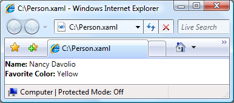
Можно отобразить свободный XAML файл из следующего:
веб-узел на локальном компьютере, в интрасети или Интернете;
Объект Формат UNC (Universal Naming Convention) общую папку.
локальный диск.
Свободный XAML файл можно добавить в Избранное браузера или сделать домашней страницей браузера.
Note
Дополнительные сведения о публикации и запуске свободных XAML страниц, см. в разделе развертывание приложений WPF.
Единственным ограничением в отношении свободных XAML является возможность размещения только содержимое, которое безопасно для запуска в режиме частичного доверия. Например Window не может быть корневым элементом свободного XAML файл. Дополнительные сведения см. в разделе Безопасность частичного доверия в WPF.
Переход к файлам HTML элемента управления Frame
Как можно догадаться, можно также перейти к HTML. Необходимо просто предоставить URI , используется схема http. Например, следующая XAML показывает Frame , осуществляющий переход к HTML страницы.
<Frame Source="http://www.microsoft.com/default.aspx" />
Переход к HTML требуются специальные разрешения. Например, нельзя перейти из XBAP , запущенного в песочнице безопасности частичного доверия для зоны Интернета. Дополнительные сведения см. в разделе Безопасность частичного доверия в WPF.
Переход к файлам HTML с помощью элемента управления WebBrowser
WebBrowser Управления поддерживает HTML размещение документов, навигации и скриптов и управляемого кода взаимодействия. Подробные сведения о WebBrowser управления, см. в разделе WebBrowser.
Как и Frame, переходе по адресу HTML с помощью WebBrowser требуются специальные разрешения. Например, из приложений с частичным доверием можно перейти только к HTML расположенный на исходном узле. Дополнительные сведения см. в разделе Безопасность частичного доверия в WPF.
Переход к пользовательским объектам
Если у вас есть данные, которые хранятся в виде пользовательских объектов, один из способов отображения этих данных является создание Page с содержимым, привязанным к таким объектам (см. в разделе Общие сведения о привязке данных). Если не требуется создание всей страницы только для отображения объектов, то можно перейти непосредственно к ним.
Рассмотрите возможность Person класс, который реализуется в следующем коде.
using System.Windows.Media;
namespace SDKSample
{
public class Person
{
string name;
Color favoriteColor;
public Person() { }
public Person(string name, Color favoriteColor)
{
this.name = name;
this.favoriteColor = favoriteColor;
}
public string Name
{
get { return this.name; }
set { this.name = value; }
}
public Color FavoriteColor
{
get { return this.favoriteColor; }
set { this.favoriteColor = value; }
}
}
}
Для перехода к нему вызовите NavigationWindow.Navigate метод, как показано в следующем примере кода.
<Page
xmlns="http://schemas.microsoft.com/winfx/2006/xaml/presentation"
xmlns:x="http://schemas.microsoft.com/winfx/2006/xaml"
x:Class="SDKSample.HomePage"
WindowTitle="Page that Navigates to an Object">
<Hyperlink Name="hyperlink" Click="hyperlink_Click">
Navigate to Nancy Davolio
</Hyperlink>
</Page>
using System.Windows;
using System.Windows.Controls;
using System.Windows.Media;
namespace SDKSample
{
public partial class HomePage : Page
{
public HomePage()
{
InitializeComponent();
}
void hyperlink_Click(object sender, RoutedEventArgs e)
{
Person person = new Person("Nancy Davolio", Colors.Yellow);
this.NavigationService.Navigate(person);
}
}
}
На рисунке ниже показан результат.
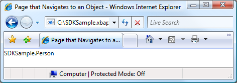
Из этого рисунка можно видеть, что ничего полезного не отобразилось. На самом деле, возвращаемое значение — это значение, которое отображается ToString метод Person объекта; по умолчанию это единственное значение, которое WPF можно использовать для представления объекта. Можно переопределить ToString метод для возврата более значимой информации, несмотря на то, что он будет по-прежнему быть только строковым значением. Один из методов, воспользуйтесь преимуществами возможностей представления WPF является использование шаблона данных. Можно реализовать шаблон данных, WPF можно связать с объектом определенного типа. В следующем коде показано шаблон данных для Person объекта.
<Application
xmlns="http://schemas.microsoft.com/winfx/2006/xaml/presentation"
xmlns:x="http://schemas.microsoft.com/winfx/2006/xaml"
xmlns:local="clr-namespace:SDKSample"
x:Class="SDKSample.App"
StartupUri="HomePage.xaml">
<Application.Resources>
<!-- Data Template for the Person Class -->
<DataTemplate DataType="{x:Type local:Person}">
<TextBlock xmlns="http://schemas.microsoft.com/winfx/2006/xaml/presentation">
<TextBlock FontWeight="Bold">Name:</TextBlock>
<TextBlock Text="{Binding Path=Name}" />
<LineBreak />
<TextBlock FontWeight="Bold">Favorite Color:</TextBlock>
<TextBlock Text="{Binding Path=FavoriteColor}" />
</TextBlock>
</DataTemplate>
</Application.Resources>
</Application>
Здесь шаблон данных связан с Person типа с помощью x:Type расширение разметки в DataType атрибута. Затем шаблон данных привязывает TextBlock элементов (см. в разделе TextBlock) к свойствам Person класса. На следующем рисунке показан обновленный внешний вид Person объекта.
Преимуществом этого способа является связность, которая обеспечивается возможностью повторного использования шаблона данных для согласованного отображения объектов в любом месте приложения.
Дополнительные сведения о шаблонах данных см. в разделе Общие сведения о шаблонах данных.
Безопасность
WPF Поддержка навигации позволяет XBAP осуществлять переходы через Интернет, а также позволяет приложениям сторонних размещения содержимого. Для защиты приложений и пользователей от опасных WPF предоставляет широкий набор функций безопасности, которые рассматриваются в безопасности и Безопасность частичного доверия WPF.